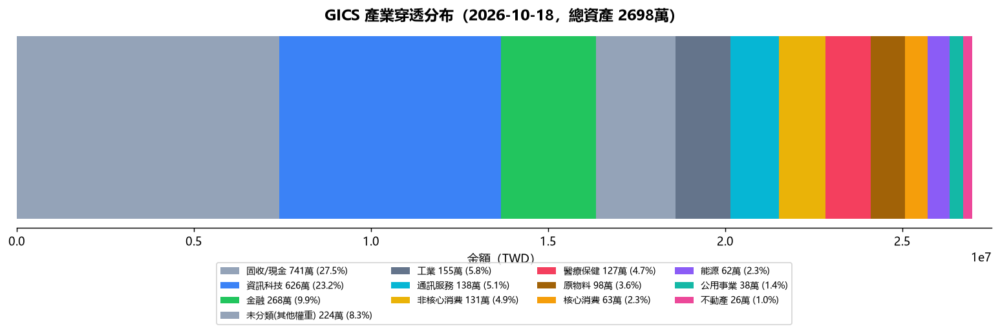

🔄 龍九再平衡儀表板
2026-10-18（週日）｜修正後 DAA 口徑 + 機構流向雷達｜本週動作：全數按兵不動（等質押撥款）
收入/支出
225,968.0 / 159,210.0
📊 五桶穿透 vs 目標
台股11.2% / 目標 10%+1.2pp
302 萬
美股37.2% / 目標 30%+7.2pp
1004 萬
防守18.2% / 目標 30%-11.8pp
490 萬
債券25.2% / 目標 25%+0.2pp
681 萬
現金4.3% / 目標 5%-0.7pp
117 萬
📡 機構流向雷達
🟢
台股
外資淨買超 5.3億（連1日）— 台股慢慢買順勢
🟡
黃金
淨多單 207,879 週減 -1.2% — 觀望
🔴
原油
淨多單 -22,903 週減 -84.0% — 聰明錢撤離
🟡
美債10年
10Y殖利率月動能 +1.8%（上行，債券觀望）
⚪
台幣
USD/TWD 32.43 週變化 +1.60%
💰 被動現金流與 FI 跑道（四情境）
| 情境 | 月被動 | 覆蓋率 | 月盈餘／缺口 | FI 跑道 |
|---|
| 🟢 保守底線（判準） | 180,100 | 113.1% | +20,890 | ∞（零缺口） |
| 🟢 當月實收 | 152,449 | 95.8% | -6,761 | 5,196 天 |
| 🟡 壓力情境（判準） | 188,758 | 118.6% | +29,548 | ∞（零缺口） |
| 🔴 極端情境（參考） | 127,100 | 79.8% | -32,110 | 1,094 天 |
保守底線＝判準層（配息基本值＋房租常態）｜當月實收＝配息實收＋房租實收｜壓力情境＝常態配息 −20%＋洲際W 空置（留停判準）｜極端情境＝配息掉到保守值再 −20%＋空置（跑道分母）。FI 跑道＝現金 ÷ 月缺口；「月盈餘」KPI 為含薪資口徑，與本表不同。
🏛️ 政策面
FRED（DFEDTARU/DGS30）＋鉅亨/經濟日報/玉山銀 2026-09-20 更新（原 9/5 非農/FOMC 待決版已汰換）（2026-09-20 13:30（政策事件日期；市場數值已於 2026-10-14 去具體化，一律見當日燈號））
①9月FOMC升息1碼
9/15-16 FOMC 決議升息 1 碼：政策利率 3.50-3.75% → 3.75-4.00%（FRED DFEDTARU 自 9/17 起 4.00、DFF 3.63→3.88）；台灣央行不跟進、維持利率不變
影響：不確定性消除 → 台股順勢＝台股分批進場條件成立；債券桶短線受 10Y 月動能壓抑（當日數值見燈號） ⚠️ 設定衝突（目標 25% < 下限 27%）→ 待裁決；裁決前本桶不自動交易（fail-closed）；目標為中樞值、非上限→ 暫不新增
②後續觀察
下次 FOMC 11 月；10 月標案結果（押標金 240 萬已於 2026-10-12 經使用者裁決取消）；9/29 貝萊德黃金/健康 9 月配息基準日
影響：若 10Y 續升 → 債券桶維持不新增；台股 00921 分批、避險衛星黃金批次照計畫（單批 ≤20萬、逢回檔）
🛢️ 原油綜合判斷：COT 淨多單當日值見燈號（資金面以燈號為準）；需求面受升息壓抑、供給面美委/伊朗拉鋸 → 維持 🟡 觀望，石油部位 Locked 不加碼
💵 債券升息敏感度：升息 1 碼已落地（9/17 起 4.00）；債券桶超配（當日比重與市值見當日資產區塊）；真正利率敏感＝保單內債券（PIMCO/M&G/摩根，債權重 48-55%）＋00983D；10Y 月動能（當日值見燈號）→ 不新增
📋 本週投資計劃
產生失敗: radar_state.weekly_plan 資料日 2026-10-17 ≠ 2026-10-18 → 不引用其數值（避免舊真值混入；要更新請跑 institutional_flow.py）
🎯 動作建議（執行紀律）
—待更新
⚪
radar_state.weekly_plan 無資料
🏭 產業別穿透（雙層 Micro）
| 產業 | 金額 | 佔比 | 狀態 |
|---|
| 高科技/半導體 | 4,854,031 | 18.5 | 🟢 未達紅線 30%（GICS 口徑 18.5%｜全基金官方/晨星真值，2026-08-22 定版；重算需重跑產業穿透） |
| 金融/電信 | 1,833,638 | 7 | |
| 醫療/公用事業/不動產 | 1,702,663 | 6.5 | |
| 固收與現金 | 11,687,099 | 44.6 | |
| 實物避險-黃金 | 320,068 | — | ✅ 已建32萬（保單8/30生效）＋鉅亨3千；剩餘 PI 後 00635U 分批 |
| 實物避險-石油 | 0 | — | 🔴 Locked（radar_state 標記，機構撤離中） |
紅線：高科技 ≤30%（當前 23.2%）｜輪動閥門：科技>30% 或雷達科技轉弱 → 乾粉轉金融/電信/醫療防禦
💰 台幣乾粉分配
台股 12-24萬
黃金衛星 131萬（預留）
石油 0
債券 0
當前 乾粉 470,934（現金 1,170,934 − 現金底線 700,000，單一口徑）｜分配表＝snapshot.乾粉執行_0926（僅供分配表；乾粉金額一律現算）
台股 0050/006208 12-24萬
黃金衛星 00635U 131萬（預留）
石油 00642U 0
債券 0
🛡️ 質押 / 風險紅線
📌 已質押（整池 1,200萬×5成 = 590萬@2.65%（2026-09-29 使用者確認；原記 2.77%，待銀行書面覆核）質押（已撥款））
| 指標 | 現值 | 紅線 | 狀態 |
|---|
| US30Y 凍結線 | 5.43% | ≥5.30% 🔴 | 🔴 觸發 |
| 美元曝險 | 69% | 目標值 60%／黃色觀察 65%／高曝險觀察線 70%（僅顯示） | 🟡 黃色觀察（僅顯示） |
| 高科技 | 23.2% | 紅線 30% | 🟢 安全 |
| 現金｜底線 700,000（單一口徑） | 1,170,934 | ≥700,000 | 🟢 安全 |
| 國泰擔保池 LTV | 50.1%（借 5,900,000／池 11,779,326） | 綠 ≤45／黃 ≤53／追繳 ≥70 | 🟡 黃區 |
📡 產業資金流向（2026-10-17T09:36）
法人淨買賣超：債券 +13百萬，能源 +2百萬，原物料避險 +2百萬，生技醫療 +1百萬，營建 +1百萬，通訊服務 +1百萬，汽車 +1百萬，不動產 -0百萬，百貨 -0百萬，金融 -1百萬，高股息防禦 -1百萬，塑化 -4百萬，鋼鐵 -4百萬，台積電 -7百萬，食品 -22百萬，航運 -28百萬，市值型 -102百萬，科技 -352百萬，其他 -1055百萬｜RS最強 能源(XLE)（+5.7pp vs SPY）｜最弱 科技(XLK)
TW 台股法人（產業桶）
| 產業桶 | 法人淨買賣超 | 方向 |
|---|
| 債券 | +13百萬 | 🟢 inflow |
| 能源 | +2百萬 | 🟢 inflow |
| 原物料避險 | +2百萬 | 🟢 inflow |
| 生技醫療 | +1百萬 | 🟢 inflow |
| 營建 | +1百萬 | 🟢 inflow |
| 通訊服務 | +1百萬 | 🟢 inflow |
| 汽車 | +1百萬 | 🟢 inflow |
| 不動產 | -0百萬 | 🔴 outflow |
| 百貨 | -0百萬 | 🔴 outflow |
| 金融 | -1百萬 | 🔴 outflow |
| 高股息防禦 | -1百萬 | 🔴 outflow |
| 塑化 | -4百萬 | 🔴 outflow |
| 鋼鐵 | -4百萬 | 🔴 outflow |
| 台積電 | -7百萬 | 🔴 outflow |
| 食品 | -22百萬 | 🔴 outflow |
| 航運 | -28百萬 | 🔴 outflow |
| 市值型 | -102百萬 | 🔴 outflow |
| 科技 | -352百萬 | 🔴 outflow |
| 其他 | -1055百萬 | 🔴 outflow |
🇺🇸 美股板塊（月動能 vs SPY）
| 板塊 | 動能% | RS |
|---|
| 能源(XLE) | +5.8% | +5.7pp |
| 核心消費(XLP) | +4.9% | +4.9pp |
| 醫療(XLV) | +4.7% | +4.6pp |
| 公用(XLU) | +1.2% | +1.2pp |
| 非核心消費(XLY) | +1.0% | +0.9pp |
| 原物料(XLB) | +0.4% | +0.3pp |
| 金融(XLF) | -0.6% | -0.7pp |
| 工業(XLI) | -0.7% | -0.8pp |
| 不動產(XLRE) | -1.8% | -1.9pp |
| 科技(XLK) | -2.4% | -2.5pp |
輪動邏輯：法人流入且產業低配 → 乾粉吸納目標（科技流出→高股息/醫療防禦）
🏭 GICS 產業分布（2026-10-18）
| 產業 | 金額 | 佔比 | 集中度 |
|---|
| 固收/現金 | 7,411,488 | 27.5% | |
| 資訊科技 | 6,255,122 | 23.2% | |
| 金融 | 2,681,435 | 9.9% | |
| 未分類(其他權重) | 2,240,779 | 8.3% | |
| 工業 | 1,553,381 | 5.8% | |
| 通訊服務 | 1,376,244 | 5.1% | |
| 非核心消費 | 1,309,069 | 4.9% | |
| 醫療保健 | 1,271,926 | 4.7% | |
| 原物料 | 984,063 | 3.6% | |
| 核心消費 | 626,694 | 2.3% | |
| 能源 | 623,609 | 2.3% | |
| 公用事業 | 384,076 | 1.4% | |
| 不動產 | 262,961 | 1.0% | |
🏠 實體不動產另計：34,017,063
（佔含不動產總資產 56%）— 大義街+洲際W 兩間房，租金 80,100/月

L1=公開月報權重 L2=公開成分權重 L3=指數基準 L4=名稱/類型推估。2026-09-23 兩階段細化：第一階段 ETF 15 檔改 L2、貝萊德 B11 改 L3、L1/別名補齊；第二階段拆解六檔基金「其他」——安聯收益成長/PIMCO 用官方完整產業表，摩根/聯博/富達/M&G 用官方資產類別＋MSCI World 補權，元大卓越50連結＝0050 權重。未分類 34.6%→8.3%（動態）。剩餘為富達另類資產（黃金/商品）、小型境內基金（路博邁5G/台中銀優息/台新半導體/國泰高股息）與 ETF 指數「其他」桶。⚠️ 本表「固收/現金」為 GICS 研究殘餘桶，非防守比例（防守看五桶穿透合併口徑）
🚨 緊急應變併入再平衡（2026-10-16 21:41）
⚠️ 歷史內文（as_of=2026-10-16）：下列內容為當時分析，非 2026-10-18 現況；其中金額已以當日真值覆蓋。
六、風控檢查】
① US30Y：5.429%（讀值日 2026-10-15）≥5.30% 紅線，已連續 18 個交易日；模式 A（防禦）亦已連續 34 個交易日。處置：長天期債券新增買單凍結。距「連續 2 日 <5.30」的解凍線沒有任何接近跡象（10 年期同日 5.13% 仍高）。
② 單日急跌煞車：台股 10/15 -3.41%，已觸發（門檻 >3%）→ 只回報不動作。美股端費半五個交易日 -7.14% 屬累積型修正，未觸發單日門檻，但已足以說明減碼不急、加碼更不急。
③ 質押水位：借款 5,900,000 元、LTV 50.01%、政策停止線 53%、距線 2.99pp、池值可跌 -5.65%。擔保池 92% 後收、追繳時不可賣 → 維持國泰保留款 700,000 不動（質押續簽必要），緩衝只能靠現金。
④ 現金：現金／安全網 1,170,934；底線 700,000；餘裕（乾粉）470,934。指定用途款 900,000 已排除於可動用之外，不列入判斷。
⑤ 跑道與盈餘：跑道 27.1 個月、月盈餘 66,758。但質押月付、扣款日與還本方式尚未經銀行書面證實前，盈餘不得當成部署依據，也不得用來宣告貸款安全。
⑥ 解凍條件複核：現金門檻通過、LTV 通過、還本安全閥未通過 → 台股分批維持凍結；台股解凍後仍受 US30Y 宏觀風險警示約束（科技部位上限維持或收緊）。
🗓 里程碑時程
10/18（日）🤝 家慶合作洽談：書面釐清權責/出資/獲利分配/退出機制（避免口頭約定爭議）；並詢問開營造廠若需資金可以怎麼處理
10/20（二）💰 國泰房貸繳款（大義街轉貸寬限期，金額見月固定支出）
10/23（五）Flight to 胡志明市 (JX 713)
10/28（三）Flight to 臺北市 (JX 712)
10/29（四）🏦 質押貸款 590 萬第一期繳款檢核（撥款 9/29 滿月）：確認繳息方式（只繳息／本息攤還）與是否自帳戶扣款；並評估是否需要變更繳款方式
10/30（五）🔁 洲際W 轉貸復檢—已併入 11/03 檢視日（2026-10-14 裁決）
質押整池質押 質押 590萬@2.65%（2026-09-29 使用者確認；原記 2.77%，待銀行書面覆核）（已撥款）